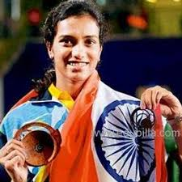

Pusarla Venkata Sindhu (born 5 July 1995) is an Indian professional badminton player. At the 2016 Summer Olympics, she became the first Indian woman to win an Olympic silver medal. She is one of the two Indian badminton players to ever win an Olympic medal – other being Saina Nehwal.
Sindhu came to international attention when she broke into the top 20 of the BWF World Ranking in September 2012 at the age of 17. In 2013, she became the first ever Indian women's singles player to win a medal at the Badminton World Championships. In March 2015, she became the youngest recipient of India's fourth highest civilian honor, the Padma Shri.Her silver medal win in the women's singles event of the 2016 Summer Olympics made her the first Indian shuttler to reach the final of an Olympics badminton event and the youngest Indian to make a podium finish in an individual event at the Olympics
Childhood and Early Training
Pusarla Venkata Sindhu was born in a Telugu family to P. V. Ramana and P. Vijaya. In 2000, Ramana was awarded Arjuna Award for his sport.[8][9] Though her parents played professional volleyball, Sindhu chose badminton over it because she drew inspiration from the success of Pullela Gopichand, the 2001 All England Open Badminton Champion.[10] She eventually started playing badminton from the age of eight.
Sindhu first learned the basics of the sport with the guidance of Mehboob Ali at the badminton courts of Indian Railway Institute of Signal Engineering and Telecommunications in Secunderabad. Soon after she joined Pullela Gopichand's badminton academy.While profiling Sindhu's career, a correspondent with The Hindu wrote:
The fact that she reports on time at the coaching camps daily, travelling a distance of 56 km from her residence, is perhaps a reflection of her willingness to complete her desire to be a good badminton player with the required hard work and commitment.
Gopichand seconded this correspondent's opinion when he said that "the most striking feature in Sindhu's game is her attitude and the never-say-die spirit."[11] After joining Gopichand's badminton academy, Sindhu won several titles. In the under-10 years category, she won the 5th Servo All India ranking championship in the doubles category and the singles title at the Ambuja Cement All India ranking. In the under-13 years category, Sindhu won the singles title at the Sub-juniors in Pondicherry, doubles titles at the Krishna Khaitan All India Tournament, IOC All India Ranking, the Sub-Junior Nationals and the All India Ranking in Pune. She also won the under-14 team gold medal at the 51st National School Games in India.
Home Page
Next